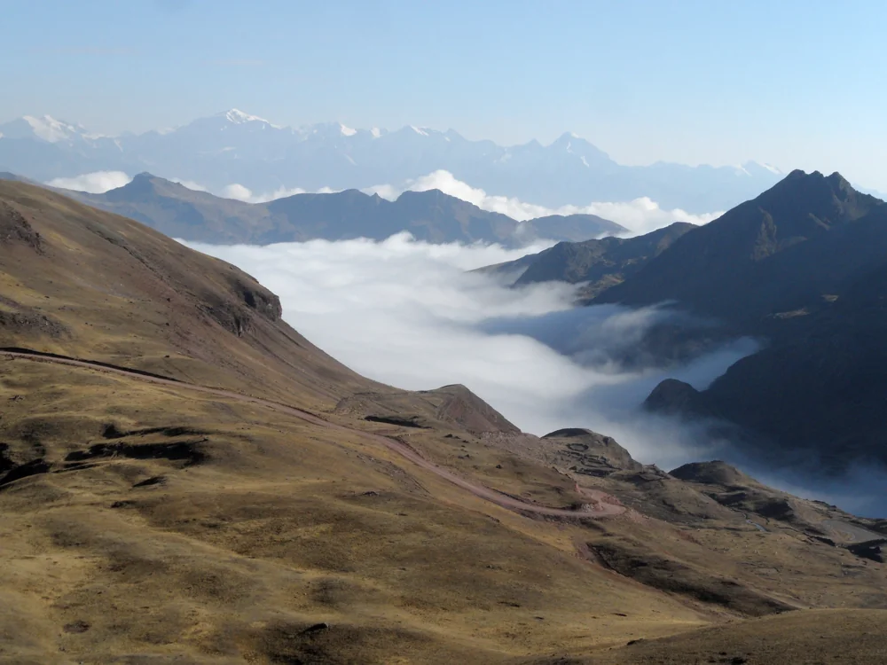
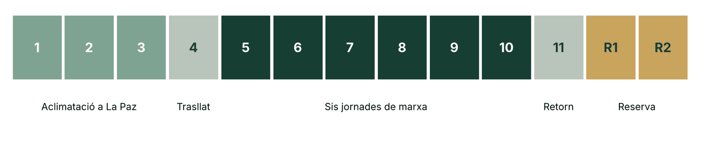
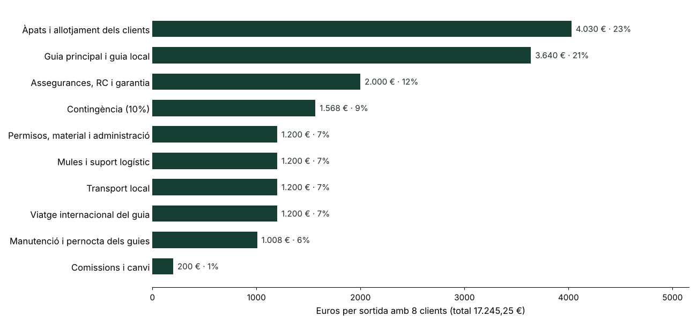
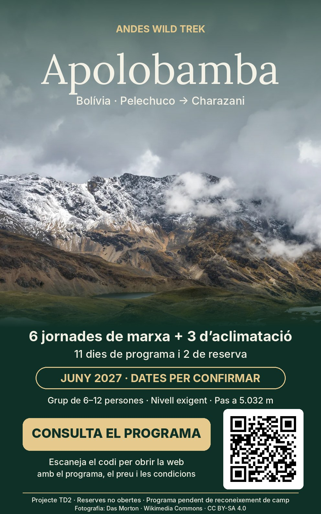

Treball TD2 · Tècnic esportiu en mitja muntanya
Andes Wild Trek
Apolobamba
Una empresa de guiatge i una travessa de sis jornades entre Pelechuco i Charazani.
Izan Pimentel Pérez
Novembre de 2026
11 dies + 2 de reserva
6–12 persones
01 · La idea
Caminar lluny.
Sentir-nos a prop.
Una travessa exigent i poc freqüentada, guiada amb el mateix criteri que al Pirineu.
- Grup reduït de 6–12 persones
- Guia de muntanya i guia local
- Interpretació del paisatge i de la cultura kallawaya
- L’èxit és ajustar l’activitat al grup, no arribar a un coll

02 · Estructura
Com encaixen les peces.
Dos límits sostenen tot el treball: les competències del TD2 al pas Sunchulli i el reconeixement de camp abans de vendre.
03 · Empresa
Qui ven i a qui.
Model: agència organitzadora de viatges combinats, amb titular autònom a Catalunya i operador local a Bolívia.
- Garantia d’insolvència i declaració responsable
- RC professional i assegurança d’activitat
- Contracte de viatge combinat
Client: senderista amb travesses de diversos dies, 25–55 anys com a referència.
- Conversa prèvia i selecció per adequació
- Revisió amb medicina del viatge
- Mínim de 6 reserves per sortir
04 · Programa
Onze dies i dos de reserva.

53,4 km · 6 jornades
+3.450 / −3.915 m
5.032 m
5, entre 4.000 i 4.700 m
05 · Les jornades
Sis jornades que caben en la llum.
| Dia | Jornada | Km | Desnivell | Hores | Nit |
|---|---|---|---|---|---|
| 5 | Pelechuco → Campament 1 | 9,7 | +1.047 / −540 | 6–8 | 4.168 m |
| 6 | Campament 1 → Hilo Hilo | 4,2 | +31 / −189 | 2–3 | 4.010 m |
| 7 | Hilo Hilo → pas Sunchulli → Campament 2 | 11,4 | +1.062 / −354 | 7–9 | 4.500–4.717 m |
| 8 | Campament 2 → Incacancha | 8,3 | +211 / −867 | 5–7 | 4.060 m |
| 9 | Incacancha → Campament 3 | 4,1 | +602 / −491 | 4–6 | 4.171 m |
| 10 | Campament 3 → Charazani | 15,8 | +497 / −1.473 | 8–9 h 30 | 3.195 m |
Regla de llum: sortida a partir de les 07.10 i arribada abans de les 16.40. Cap jornada supera les 9 h 30 min.
06 · Aclimatació
On dormim cada nit.

07 · Contrast de la ruta
Què diuen les fonts.
| Dada | GPX | Operadors |
|---|---|---|
| Hilo Hilo | 4.010 m | 4.010 m |
| Pas Sunchulli | 5.032 m | 5.100 m |
| Etapa 2 sencera | 7 h 17 min el 2012 | unes 9 h |
| Camp de Sunchulli | 4.717 m | uns 4.500 m |
| Final | Charazani | sovint Curva |
08 · Temporada i plans B
Juny i juliol, amb un pla B a cada jornada.
Finestra recomanada: del 15 de juny al 31 de juliol
Fosc: recomanat · verd clar: possible · beix: risc de nevades fortes (agost de 1993 i de 2019) · gris: pluges i carreteres tallades.
- Sortida proposada: segona quinzena de juny de 2027
- Un 36 % del camí va per pistes mineres: gairebé sempre hi ha sortida en vehicle
- Aigua només per sobre de les mines: el tractament no elimina el mercuri
09 · Pla C
Una ruta completa per l’Akamani.
| Etapa | Recorregut | Km | Desnivell | Hores | Nit |
|---|---|---|---|---|---|
| C1 | Curva → Cañisaya | 5,2 | +200 / −60 | 2–3 | 3.880 m |
| C2 | Cañisaya → Pas d’Akamani (4.661 m) → Incacancha | 10,0 | +950 / −750 | 6–8 | 4.065 m |
| C3 | Incacancha → Pas Lorisani → Huayrapata | 12,1 | +580 / −950 | 6–8 | 3.700 m |
| C4 | Huayrapata → Pas de Chatalayo → RN16 → Charazani | 7,3 | +340 / −680 | 4–5 | 3.190 m |
10 · Pressupost
3.800 € per persona.

30,7%
de marge amb el grup mínim de 6 persones.
- Cost amb 6 clients: 15.807 €
- Amb 4–5 clients no s’arriba al 30%
- +20% de costos locals: marge del 23,2%
- Hipòtesis a substituir per cotitzacions reals
11 · Metodologia
Com es guia i com s’avalua.
Límit tècnic: amb neu dura o gel al pas Sunchulli que exigeixi grampons o piolet, la jornada no es fa. El guia local no amplia les competències del TD2.
12 · Màrqueting i web
Dir només el que es pot acreditar.
- Web del client: etapes, preu i condicions, sense tracks ni meteo
- Documents per al client: fitxa, preparació, pla d’entrenament i dossier complet per WhatsApp
- App mòbil del guia amb les fitxes tècniques, sense cobertura
- Campanya de vuit setmanes a Instagram i clubs
- Objectiu: 6 reserves; calen 60–120 consultes

13 · Conclusions
Què queda definit i què falta.
Definit
- Model d’empresa i marc legal
- Programa coherent amb la llum i l’aclimatació
- Pressupost calculat i sensibilitat
- Metodologia, fitxes i avaluació
- Temporada, plans B i pla C
Abans de vendre
- Reconeixement de camp amb el guia local, incloses la baixada alternativa i el pla C
- Permís escrit del SERNAP
- Cotitzacions locals i garantia
- Permisos, habilitacions i assegurances
Moltes gràcies.